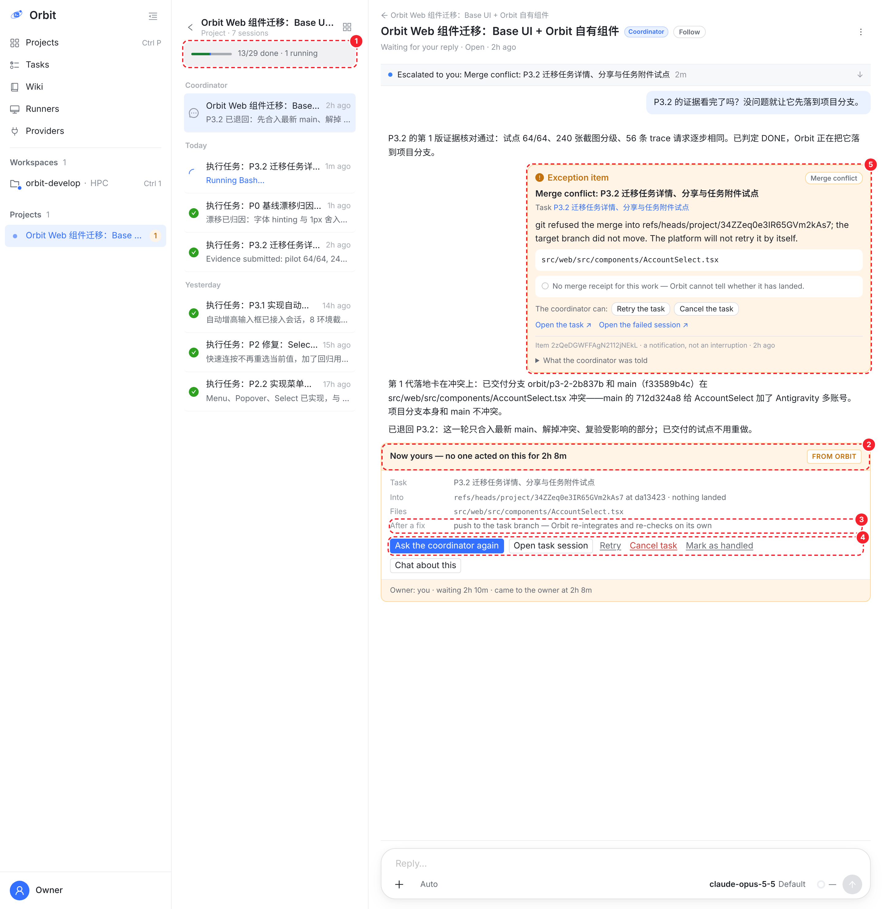
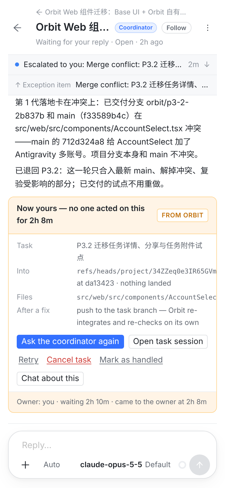

左边截自真实的 Web 控制台，数据照 10-06 23:44（UTC）这个项目的真实状态摆放：P3.2 的第 1 次落地停在 AccountSelect.tsx 的冲突上，协调者 3 分钟后把 P3.2 退回去修，第 2 轮已经跑了 2 个多小时，时钟还是把待办转给了你。
问题不在某一句文案。这张卡把“发生了什么”“谁在处理”“要你做什么”“修好以后会怎样”四件事，要么没写，要么写错。而且它只出现在协调会话里，你打开项目时看到的那一页（左栏）对它一字不提。

POST /tasks/:id/execute），会另起一轮。它不会重新落地，也不关待办（服务端给冲突配的 RETRY 门其实是 task_reopen）。Cancel task 会把正在修冲突的第 2 轮一起取消。Open task session 打开的是已经结束的第 1 轮。服务端算好的 requiredAction 一句也没画。读自生产：task 34Za39ACSBoCkYKc80Md8、待办 34bQcBBTiA3M8EID5GpXN、作业 2FEAwsKlxxLvKm1lzz9QGe（10-06，UTC）
AccountSelect.tsx。main 的 712d324a8（Antigravity 多账号）也改了它；项目分支本身和 main 不冲突没有落下任何东西，项目分支停在 da13423。开出例外待办，交给协调者，2 小时窗口为什么会这样：升级时钟（escalatesAt）只认三种进展：挂了 fixes_open_item_id 的修复任务、协调者发起的集成重跑、投递那一轮的回复。“退回原任务”是协调者处理冲突最常用的一条路，偏偏不算。所以修复跑到一半，卡片照样升级给你。
